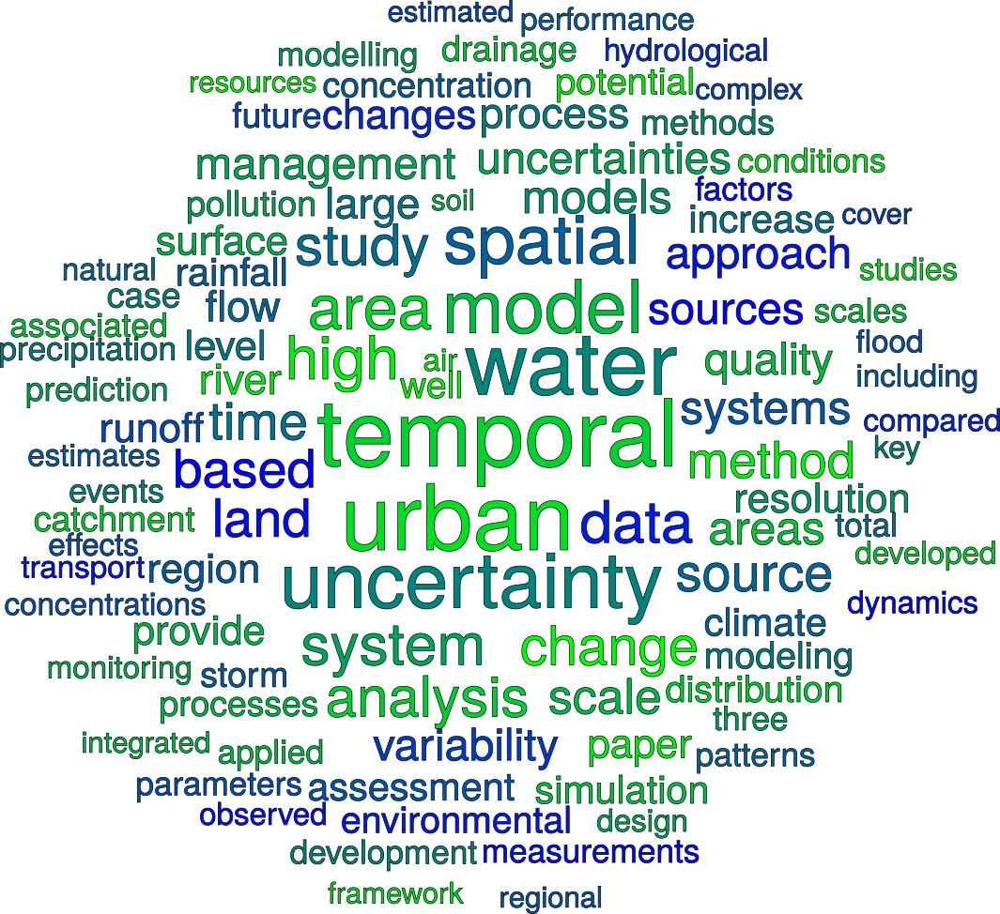
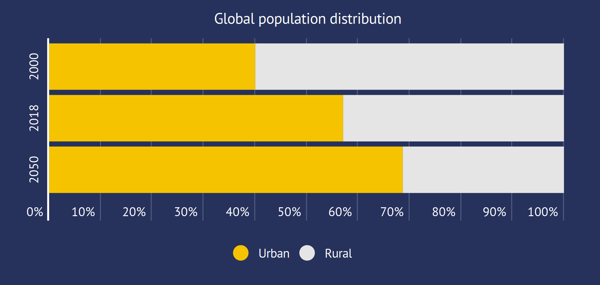
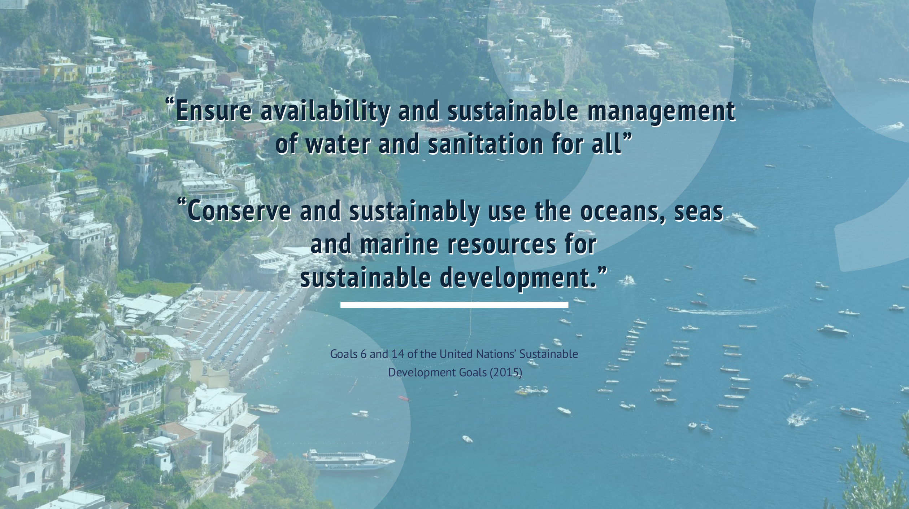

Temporal Uncertainty Propagation Analysis
A contribution towards sustainable urban water management
By Jairo Arturo Torres-Matallana in Theme Features
June 8, 2021

A Global Priority
Sustainable urban water management (SUWM) is becoming a global priority due to the impact of urbanisation on natural and urban ecosystems. The global population in 2018 was equivalent to 55 per cent of the world’s population residing in urban areas. By 2050, the global population will reach 9.7 billion, with 68 per cent of the world’s population (i.e., 6.6 billion people) projected to be urban (Fig. 1). With the increase of urbanisation development the lack of basic urban infrastructure (i.e., water and energy supplies, sanitation, education, and green space or parks) could become more acute for the sustainability of cities in the future, especially in developing countries.

Figure 1. Evolution and projection by 2050 of the global population distribution.
Urbanisation not only impacts the hydrological cycle, but also has an interlinked impact on the urban landscape ecosystem and its evolution. This has been recognised in the last two decades by governments, especially in more economically developed countries, with the advent of concepts such as “Sustainable Development”, and “Nature-Based Solutions”, which focus primarily on what nature can provide to humans. This is a response to the urgency of solving urban water problems and integrating solutions with new urban water management strategies and practices.
A Key Contribution

Figure 2. Goals 6 and 14 of the United Nations’ Sustainable Development Goals (2015).
SUWM is a key tool contributing to several of the United Nations’ Sustainable Development Goals. Integrated urban drainage models are primary components of monitoring systems and essential decision-making tools for SUWM. However, it is paramount to recognise that in environmental modelling, and hence also in SUWM, every model contains uncertainties to some degree. This is because any model makes simplifications and assumptions about the real-world processes involved, while model inputs are rarely if ever known without error. Quantification of model input and output uncertainty is essential for characterising inputs and choosing objectively the suitable configuration of the model for addressing a specific task related to integrated urban drainage modelling (IUDM). Uncertainty quantification in integrated environmental models with emphasis in SUWM, specifically urban stormwater system models (USSM’s) used in decision-making for environmental protection, require that the accuracy of model outputs is known and meets predefined standards.
Challenges in Urban Stormwater Systems Modelling
- Full hydrodynamic USSM’s are complex and require a highly intense computational budget, which constitutes a constraint when long-term simulations or uncertainty propagation analysis are required.
- Although catchment average precipitation is a key component of USSM’s, catchment average precipitation is not always accurately known when derived from measurements by rain gauges. To estimate the precipitation given a known precipitation time series at a location outside of the catchment is often needed, while also quantify the uncertainty associated with the estimated catchment average precipitation.
- Software tools for temporal uncertainty propagation for USSM’s are not generally available.
- Statistical uncertainty analysis of USSM’s is a relatively new subject that largely needs to be developed while very few solid applications have been done. This is linked to the second problem, because uncertainty propagation analysis can only be done if the uncertainty sources are quantified. It is also linked to the third problem because of the need for software tools with capabilities to efficiently propagate input uncertainty in USSM’s, and requires contributions from multiple disciplines (i.e., hydrology, statistics, computer science, geoinformatics).
Uncertainty analysis in USSM is not yet well understood. A contribution is made by tackling these challenges as exposed in the four main chapters, which together with the General Introduction and Synthesis compose this doctoral dissertation.
A main conclusion of this research evidences that it is of paramount importance in sustainable urban water management to pay attention to uncertainty. Addressing uncertainty characterisation and uncertainty propagation in the modelling chain for the design of Nature-Based Solutions, requires tailored methods and software tools that enable temporal, spatial and spatio-temporal uncertainty characterisation and propagation across multiple scales, while linking several modelling sub-modules. Read More
- Posted on:
- June 8, 2021
- Length:
- 4 minute read, 649 words
- Categories:
- Theme Features
- Tags:
- arturo-site Projects
- See Also:
- Urban landscape artificialization leads to increased flood hazards in the most vulnerable locations (Under review)
- Calibration for an Ensemble of Grapevine Phenology Models under Different Optimization Algorithms
- An expanded framing of ecosystem services is needed for a sustainable urban future